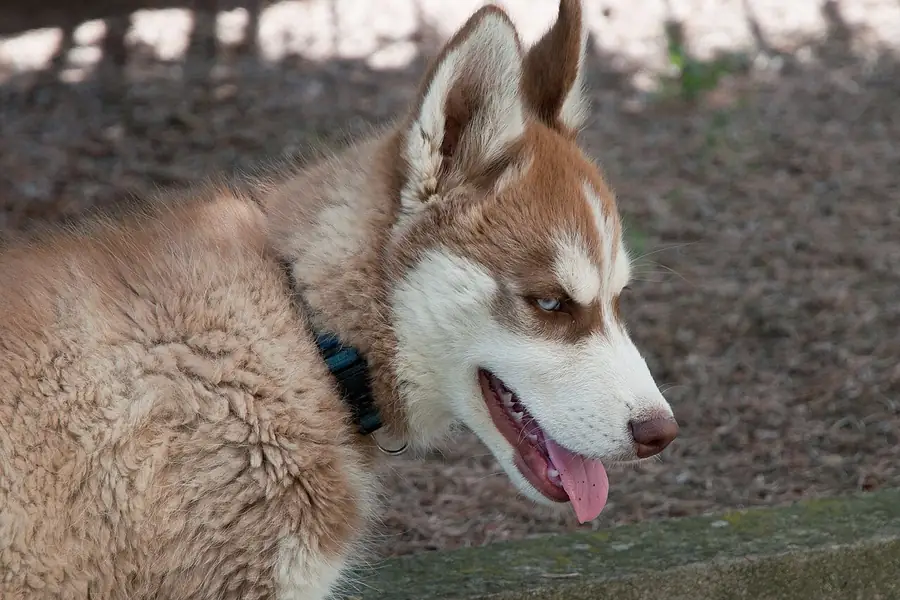

Dog science for teachers
Free, print friendly dog science for classrooms: fact sheets and worksheets with answer keys, lesson ideas by grade band linked to NGSS where they fit, a vocabulary list and three classroom games. No sign up, no ads, no student data.

Printables (free, no sign up)
- What does a dog need? Grades K to 2 worksheet with answer key. NGSS K-LS1-1.
- Dog senses and body language fact sheet Grades 3 to 5, with a short quiz and answer key. NGSS 4-LS1-2.
- Traits, breeds and selective breeding Grades 3 to 8 worksheet with answer key. NGSS 3-LS3-1 and MS-LS4-5.
Each printable is a print friendly page: use your browser's print button or the Print button on the page. Facts are sourced to veterinary organizations, the American Kennel Club and peer reviewed papers listed on our research page.
Lesson ideas by grade band
Kindergarten to grade 2
- Needs of a dog (K-LS1-1): look at photos of dogs eating, drinking and resting, list what every dog needs, then complete the worksheet. Extend: compare with what a plant needs.
- Safe snacks sort: play Snack or Nope? together on the board and talk about why some human foods are not safe for dogs.
Grades 3 to 5
- How dogs sense the world (4-LS1-2): read the fact sheet, then have groups draw a model showing a dog seeing a ball, the information reaching its brain, and how it responds.
- Reading signals: play Wag Signals as a class and record which body parts gave the best clues.
- Traits in a litter (3-LS3-1): use the traits worksheet data table to compare puppies and parents.
Grades 6 to 8
- Selective breeding (MS-LS4-5): students research how breed groups were developed for jobs such as herding, hunting or guarding, using the breed groups guide and the AKC, then complete part B of the traits worksheet.
- Test the toy color claim: play Fetch Spotter, read Can dogs see color?, and design a fair test of which ball color is easiest to spot on grass.
Grades 9 to 12
- Reading real science: students pick a paper from our research page, find the question, method, sample size and main finding, and judge how far the result can be generalized (for example, a study of one breed). No NGSS code is claimed for this activity.
Games as classroom activities
- Snack or Nope? food safety sorting, about 10 minutes.
- Wag Signals body language quiz, about 10 minutes.
- Fetch Spotter timing game with dog vision facts, about 5 minutes.
All games are free, need no accounts and collect no student data. Best scores stay in the browser only.
Vocabulary list
- Breed
- A group of dogs with a shared look and set of traits, developed by people through selective breeding.
- Trait
- A feature of a living thing, such as coat color, ear shape or size.
- Inherited
- Passed from parents to their offspring.
- Variation
- Differences between individuals of the same kind, such as puppies in one litter.
- Selective breeding (artificial selection)
- When people choose which animals have offspring, to pass on traits they want.
- Cone cell
- A cell in the eye that works in bright light and detects color. Dogs have two kinds; most people have three.
- Rod cell
- A very sensitive cell in the eye that works in low light and helps detect movement.
- Dichromatic
- Having two types of cone cells, so seeing color through two channels.
- Body language
- How an animal communicates with its posture, face, ears, tail and movements.
- Play bow
- Chest and front legs down, bottom up: a dog's invitation to play.
- Whale eye
- When a dog shows a lot of the white of its eye, a sign of tension.
- Toxic
- Poisonous; able to cause harm or illness.
More terms in our dog glossary.
For older students and researchers
Our research page lists the peer reviewed papers and veterinary guidelines behind our articles, with DOIs. Fact articles include a Cite this page box in APA, MLA and Chicago style.